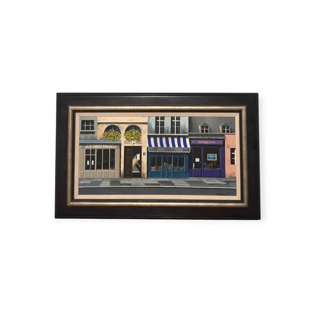
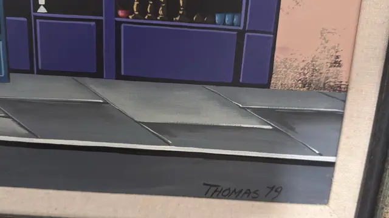
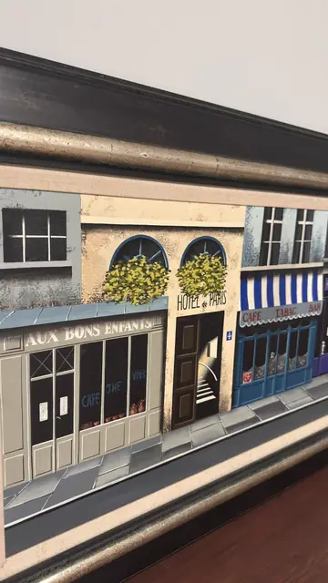
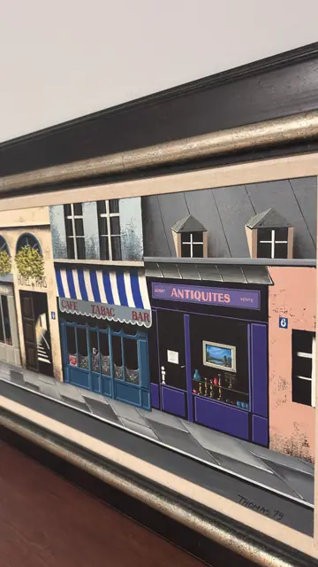

Paintings & Prints
Parisian Shopfronts Painting Signed Thomas 1979, Signed, Framed, 1979
Thomas · dated 1979
Price Upon Request




About the Item
Thomas. A wide, flat-perspective view along a Paris pavement, painted in a crisp hard-edge style: from the left a grey-green cafe front lettered AUX BONS ENFANTS, then a cream facade with arched windows, clipped bay trees and the HOTEL de PARIS doorway, a blue-and-white striped awning over CAFE TABAC BAR, and finally a violet ANTIQUITES shop with a picture and candlesticks in its window against a peach stucco wall. Colour is cool and graphic - violet-blue, cobalt, dove grey and cream, with pink stucco and mottled weathered patches - and the empty grey pavement runs unbroken across the foreground. No figures appear anywhere. Medium: acrylic on canvas. Signed lower right of the canvas, in black, reading "THOMAS 79". Inscribed on the reverse or mount: THOMAS 79; AUX BONS ENFANTS; CAFE THE VINS; HOTEL de PARIS. Condition: No visible damage to the painted surface; the black frame shows light scuffing along the top edge.
Details
- Creator:
- Thomas
- Creation Year:
- dated 1979
- Dimensions:
- Height: 25.0 in (63.5 cm)
Width: 39.25 in (99.7 cm)
outside of frame - Medium:
- acrylic on canvas
- Period:
- 20Th
- Condition:
- Offered in the condition shown in the photographs.
- Reference Number:
- VO-112
- Documentation:
- no certificate or label photographed; the back was not shown
- Gallery Location:
- THOMAS 79; AUX BONS ENFANTS; CAFE THE VINS